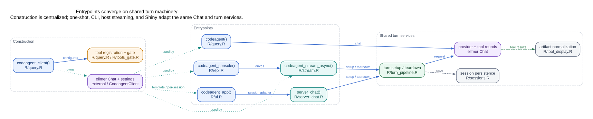
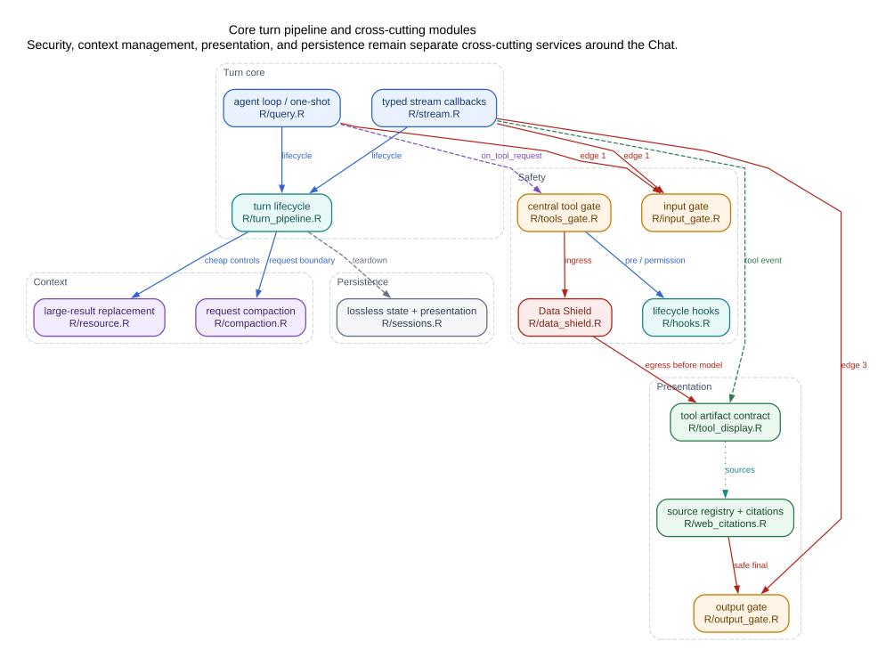
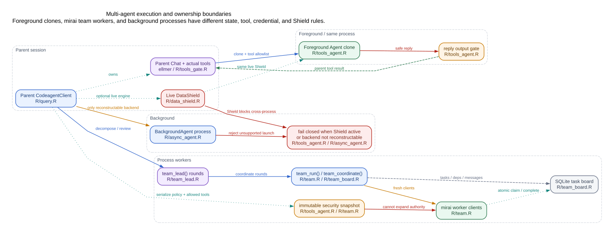

语言： English | 简体中文
本文是维护者代码地图，不是全部 R function calls 的自动 dump。R6、S7、callback、动态工具注册和 process worker 使纯静态图既嘈杂又不完整。图使用 codegraph/LSP 作为作者取证工具，并把经过复核的 architecture edges 写入 manifest。
理解这些文件背后的运行时概念，请先看技术概念与边界。
Edge 语义
| Edge | 含义 |
|---|---|
calls |
direct/shared call path |
callback |
callback/event 注册或调用 |
state |
拥有、携带或共享状态 |
spawns |
创建 worker/process/daemon |
persists |
写入持久状态 |
guards |
授权/安全边界 |
returns |
结果返回父路径 |
点线 ownership edge 不一定是 function call。显式区分这些 edge，避免把动态 R 架构伪装成普通静态调用图。
各入口汇聚到共享 turn machinery

读者： 维护者 / 集成者
codeagent_client() 集中处理
provider/model、settings、prompt、tool registration 和 permission
callback。各入口把同一个 mutable Chat 适配给不同宿主：
-
codeagent()：one-shot； -
codeagent_console()：同步stream和REPL命令； -
codeagent_stream_async()：UI-neutral typed callbacks； -
codeagent_app()：Shiny shell；server_chat()把browser events接入共享turn services。
turn_pipeline.R
拥有setup/teardown，ellmer拥有provider/tool
rounds；tool_display.R规范tool result，session
persistence单独存在。
入口文件
| 文件 | 主要职责 |
|---|---|
R/query.R |
client factory、one-shot、agent loop、tool registration |
R/repl.R |
terminal host和commands |
R/stream.R |
typed streaming host contract |
R/ui.R |
Shiny page/layout/session construction |
R/server_chat.R |
Shiny browser adapter |
R/turn_pipeline.R |
共享setup/teardown |
R/sessions.R |
lossless state和presentation records |
前台 turn 周围的核心模块

读者： 维护者
核心 turn 有意保持较小，cross-cutting concerns 独立存在：
-
Context：
resource.R做廉价large-result replacement；compaction.R负责request-boundary recount和summary。 -
Safety：
input_gate.R、tools_gate.R、hooks.R、data_shield.R保护不同边界。Permission gate是授权authority，hooks是扩展点，Shield负责数据保密。 -
Presentation：
tool_display.R拥有versioned artifact adapter；web_citations.R拥有current-turn source registry；output_gate.R负责最终可见回复安全。 -
Persistence：
sessions.R保存lossless turns和文本presentation records。
修改模块时要复核全部 edge type，而不只是direct callers。例如修改tool result会同时影响model-facing value、artifact、optional shinychat display、citation source extraction、Shield egress和session replay。
Multi-agent 与 process ownership

读者： 维护者 / 安全审阅者
三类执行路径的保证不同：
Foreground Agent
-同一R process内clone parent Chat；
-继承parent实际工具的allowlist/signature snapshot； -codeagent-owned
shielded clone共享同一live DataShield； -subagent
reply在成为parent tool result前经过output gate。
Team workers
-
team_run()/team_coordinate()在mirai workers中创建fresh clients； -worker接收immutable security/backend snapshot，不能扩大parent authority； -
team_coordinate()用SQLite board存tasks、dependencies、messages、atomic initial claim和completion record； -
team_lead()在多轮team execution外做bounded semantic coordination。
Background Agent
-要求可重建backend和process-safe config； -Data Shield当前拒绝cross-process background path，不序列化live protection engine； -unsupported launch fail closed，不静默切换provider。
用户API和当前board语义见团队协调。
Change-impact 指南
| 修改… | 至少复核… |
|---|---|
| turn setup/teardown | query、stream、Shiny adapter、compaction、sessions |
| tool metadata/modes | tools gate、hooks、Shield ingress、subagent snapshots |
| tool result shape | artifact adapter、Shield egress、citations、replay、UI hosts |
| citation registry | web/provider citations、output gate、sessions |
| Data Shield | input/tool/output三边、foreground subagent、background fail-closed |
| session codec | restore、replay presentation、citations、tool IDs |
| model switch | Chat identity、tools/hooks、Shield、Shiny captured state |
| team worker setup | backend descriptor、credential selector、allowed tools、board cleanup |
为什么不是全自动调用图
纯静态提取会漏掉：
- ellmer
on_request_start、on_tool_request、on_tool_resultcallbacks； -R6 mutable state ownership； -S7 content dispatch； -tool factories和dynamic registration； -Shiny reactive observers； -callr/mirai/background process boundaries； -不是function call的persistence/security关系。
所以canonical manifest记录edge证据和语义。Codegraph/LSP用于发现和复核，但不是pkgdown build dependency。